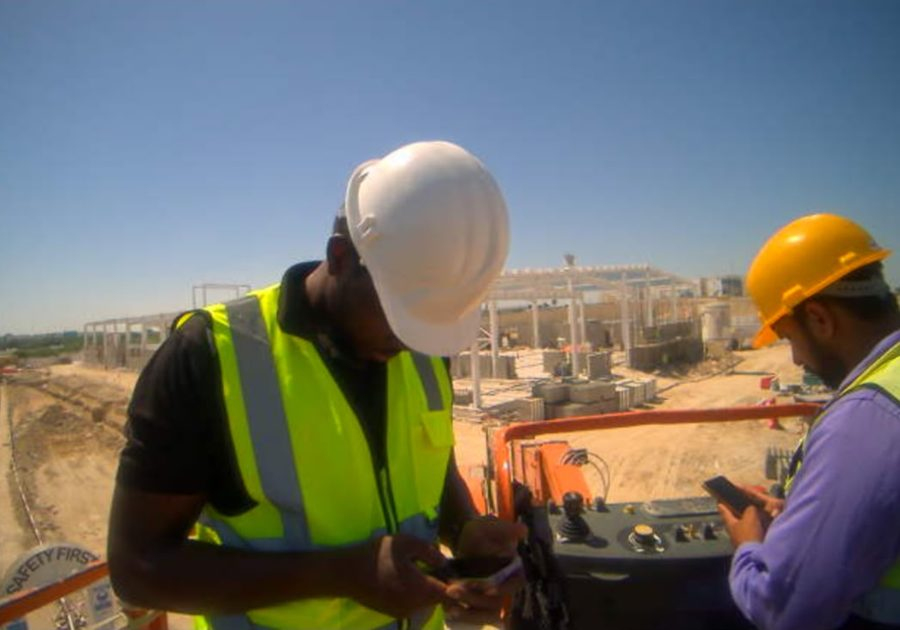
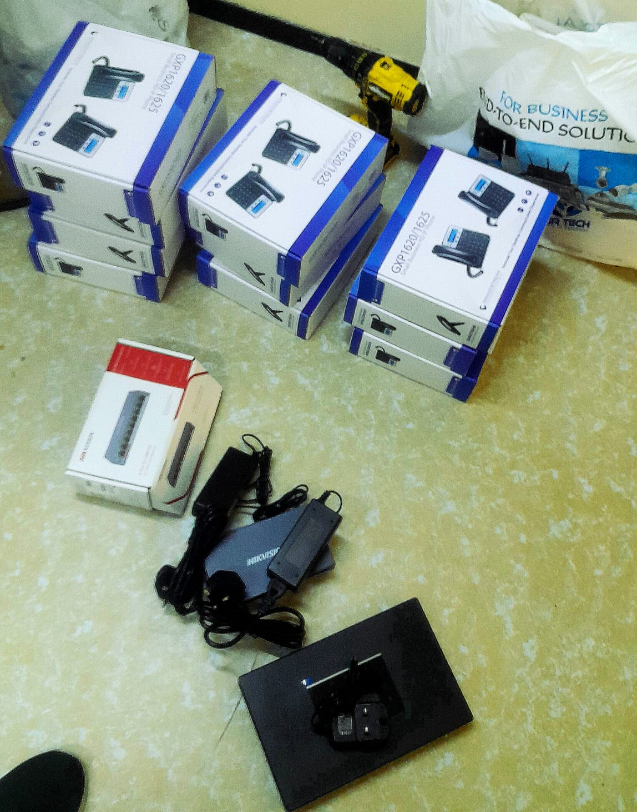
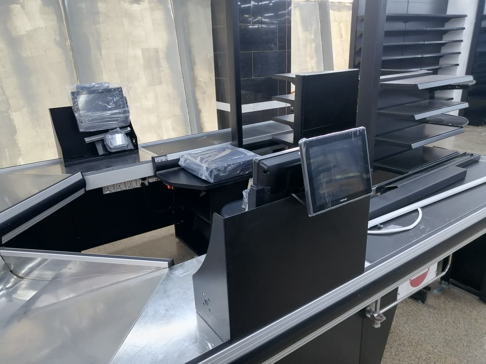

Microsoft 365 & Azure
Microsoft 365 administration, Exchange Online mail flow, Entra ID identity, Conditional Access, MFA, Secure Score, CSP/NCE licensing and Azure administration.
Hi, I'm
IT Infrastructure Engineer with 6+ years across systems administration, network security, Microsoft 365 and ELV security systems. I run IT for a UAE construction and contracting company — a 630-user Microsoft 365 tenant, a 13-floor head office and 10+ project sites. Microsoft 365 Administrator Expert (MS-102), Azure Administrator (AZ-104), ITIL 5 and CCNA certified.
IT Infrastructure Engineer with 6+ years of experience in systems administration, network security, Microsoft 365 & Azure and ELV security systems. I currently run IT for a UAE construction and contracting company: a 630-user Microsoft 365 tenant, a 13-floor head office and 10+ project sites, including KIZAD and ADNOC projects.
My day-to-day work covers FortiGate firewalls, site-to-site VPN, Windows Server, Hyper-V clustering, SAN storage and Veeam backup — run with ITIL-aligned incident, problem and change practices. I also bring strong CCTV and access control experience, with 1,500+ IP cameras deployed, including a single project of 500+ cameras and 85 network devices.
Certified as a Microsoft 365 Administrator Expert (MS-102), Azure Administrator (AZ-104), ITIL 5 and CCNA, and currently working toward Azure Solutions Architect Expert (AZ-305). My goal is to use IT as a strategic business tool that drives efficiency and security, not just a support function.
Microsoft 365 administration, Exchange Online mail flow, Entra ID identity, Conditional Access, MFA, Secure Score, CSP/NCE licensing and Azure administration.
Windows Server, Active Directory, Group Policy, DNS and DHCP, Hyper-V failover clustering, Dell PowerEdge, RAID, Fibre Channel SAN, NAS, IIS and SQL Server.
TCP/IP, VLANs, routing, NAT, IPsec and SSL VPN, Wi-Fi and fiber, with firewall policy, web filtering, hardening and vulnerability remediation.
Veeam Backup & Replication, 3-2-1 backup strategy, restore testing and disaster recovery planning for production servers.
IP CCTV design and commissioning, NVR/VMS, access control, biometric time attendance, ANPR, PA/VA and gate barriers across multi-site projects.
ITIL-aligned IT operations: L1–L3 support, incident and problem management, procurement, vendor and asset management, documentation and SOPs.
Microsoft 365 & Azure · Windows Server & Hyper-V · Network Security · Backup & DR · ELV Systems · ITIL Service Management
Freiburg Contracting & General Maintenance LLC · Abu Dhabi, UAE
ITD Computer Equipment Trading · Dubai, UAE
Alanfal Group
Alfafa Computer Company · Khartoum, Sudan
Single maintenance contract keeping a client's full IT and ELV estate operational — nine systems across CCTV, ANPR, PAVA, access control, VoIP, parking barriers and networking.
Tenant-wide security hardening work covering Conditional Access policies, MFA enforcement and Secure Score improvements.
Managed timelapse coverage across Aldar Properties and ADNOC project sites (KIZAD KLP6, Al Dhafra) — a custom camera-health dashboard plus an ffmpeg workflow for client-ready progress films.
Ongoing VPN, routing, NAT and filtering configuration across FortiGate firewalls supporting multi-site operations.
Implemented Veeam backup for Windows VM infrastructure, with planning underway for Oracle Linux/MySQL server backup coverage.
B.Sc. in Information Technology · Graduated 2024 · Grade: Excellent
Single maintenance contract keeping a client's full IT and ELV estate operational — nine distinct systems across surveillance, access control, public address, VoIP, parking barriers and networking.




